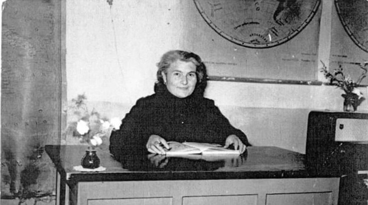
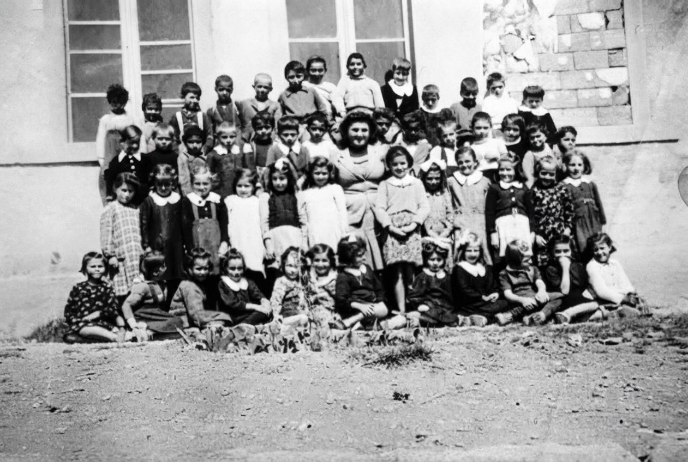
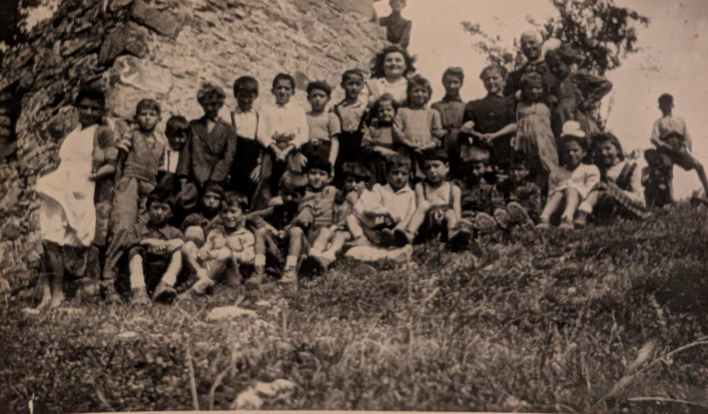
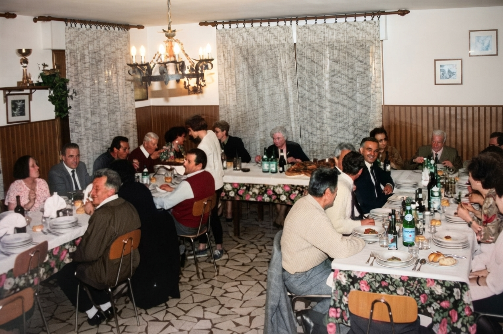

Teacher Gemma Benvenuti
Gemma Benvenuti (1923 – 2017)
Teacher, educator and protagonist of life in Rocchetta Sandri
To everyone, she was "my teacher". And in that "my" there was all the respect, gratitude and recognition of the authority of a figure who accompanied the childhood of so many generations.
Origins and education
Born on September 10, 1923 in Centralia, Illinois, to parents who had emigrated to the United States, she returned as a six-year-old child with her family to Rocchetta Sandri. Her mother's foresight, Domenica Paolini, and a sufficient economic availability resulting from the hard work and sacrifices of her parents in the mines of the United States, allowed her to graduate in Modena and to begin, just after the war ended, her teaching career.
The post-war multi-grade classes
Her first school year was 1946/47 and took place in Casine. Teaching in those years took place in the so-called "multi-grade classes", which saw students of different ages in the same classroom. The first school year in Casine had 39 students of all grades! And so she managed to train generations of children often coming from very poor families, with parents who were almost always almost illiterate, to whom she managed to transmit the value of study and commitment.
A style that crosses generations
Her style and method remained unchanged over the years, until the last ones before retirement, with classes gradually composed of children, grandchildren and in some cases great-grandchildren of former students. Upon reaching 40 years of teaching, she was awarded the gold medal for merit by the President of the Republic Giorgio Napolitano.
Beyond teaching
Beyond teaching, her love and attachment to Rocchetta and its traditions was manifested and is still manifested through the organization of the choir to accompany liturgical celebrations, the trips organized with great participation, the much-awaited "Mother's Day party", a moment dedicated to women not only from Rocchetta.
An unforgettable figure
In a Rocchetta that has unfortunately seen over the years all the commercial and catering activities that characterized it disappear, which no longer has the celebration of Sunday Mass, which has been without a school building for decades, the memory of years in which the hamlet was alive and populated also passes through the memory of figures like teacher Gemma, who of those years, albeit with humility and without clamor, were absolute protagonists.
Teacher Gemma at her desk, 1960s

School year 1946/1947 in Casine

School year 1948/1949 in Trentino

The first class of '46 reunites with the Teacher
The life of Teacher Gemma
The birth
Born in Centralia, Illinois, to parents who had emigrated to the United States.
Return to Rocchetta Sandri
Returns with her family to Rocchetta Sandri at the age of six.
Graduation in Modena
Thanks to family sacrifices, she manages to graduate and prepare for teaching.
First year of teaching in Casine
She begins teaching in Casine. The multi-grade class has 39 students of all grades. In those years teaching took place with children of different ages in the same classroom.
Over 40 years of teaching
She dedicates over forty years to teaching, training generations of children, sons, grandchildren and great-grandchildren of former students. She organizes the choir, trips and the Mother's Day party.
Gold medal for merit
President of the Republic Giorgio Napolitano awards her the gold medal for educational merit for her over 40 years of teaching.
The passing
She passes away in 2017. The community of Rocchetta Sandri remembers her as "my teacher", an unforgettable figure of educator and protagonist of village life.